Al-Kiswa al-Khassa
الكسوة الخاصة بدار الحِرَف
The clothing system specific to Dar al-Hiraf — and what a resident actually wears throughout the day.

Unlike the catalogue of traditional Moroccan and Arab forms presented in Clothing, this page describes the system specific to the Riad: why it is worn this way day to day, and precisely what it consists of.

DAILY LIFE
A way of dressing, not a uniform
In the daily life of the Riad — meals, prayer, conversation, work in the workshops — traditional dress is the norm, not the exception. The serwal replaces jeans, the gandoura or djellaba replaces the t-shirt: not by outward obligation, but because traditional dress carries within it the measure and dignity — the adab (أدب) — that the life of the Riad seeks to embody.
This sobriety extends to the details: no close-fitting Western-cut underwear, no branded sports shoes, no caps, no torn or printed clothing. The sole exception: traditional wrestling attire, itself inherited from local culture, for physical discipline.
This choice is not only moral: it is also physical. The loose, layerable volumes of Maghrebi tradition are no aesthetic accident — they naturally regulate the body's temperature within the riad, keeping the inner courtyards cool in summer and shielding against the damp cold of stone and rammed-earth walls in winter. Traditional dress plays the same role as the architecture itself: working with the climate rather than against it.
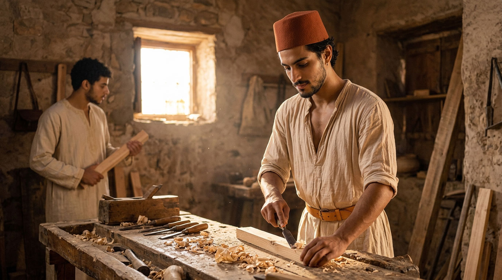
WORKSHOPS
In the workshops
Practical traditional dress — short sleeves, sturdy fabric — rather than the most formal option: a garment for work, not for display. It remains, nonetheless, the same gandoura worn throughout the house, cut short rather than replaced by another garment: even in the gesture of service, the khidma (خدمة), the traditional form is never set aside.
GUESTS
For visiting guests
Guests of the selective hospitality programme are offered, upon arrival, a complete traditional outfit — free to adopt it for the length of their stay or to keep their own clothing, within the bounds of decency. Only residents make it a constant rule of life.
Outside the Riad, everyone dresses as they see fit. This freedom does not contradict what precedes it: it is its natural complement. What the Riad asks, it asks only within its walls.
THE SYSTEM
What it consists of
Beyond the Moroccan and Arab wardrobe, the students of Dar al-Hiraf wear a system of signs specific to the house — not a uniform, but a visual language built on three distinct needs: shared belonging, identification of craft, and the discreet narration of the personal path accomplished.
Two public outfits are provided: the official outfit (base garment + cap + belt, for life at the Riad and occasions of representation) and the reduced/urban outfit (base garment alone, with its distinctive detail, for going out into town) — not counting the full freedom to wear ordinary clothes outside the Riad.
This system also follows a logic of material, at three levels: raw natural fibres (linen, hemp, cotton) for all daily use, without exception; tone-on-tone woven damask for the masters' great occasions; gold-thread sqalli brocade reserved for the two sole points in the system conceived as a sacred moment apart — the investiture mantle and the edge of the grade-4 belt. The richness of material thus rises only where it carries real meaning, never as a diffuse standard.

الغندورة
Al-Ghandura — the base garment
The Riad's gandora takes the form of the simple qamis, without a hood — but cut to fit a trained body: structured shoulders, upright carriage, without ever falling into a Western-cut fit. The principle: a garment that clothes a healthy body, without ever hiding it under excess fabric.
It exists in two lengths, depending on use: the long form, down to mid-calf, for communal life and occasions of representation; the short form, worn over the visible serwal, for work in the workshops and everyday days — the same garment, cut for two rhythms of the day.
The front opening is edged with a thread of sfifa (سفيفة, sfīfa — the traditional Moroccan braided cord) in a single colour, identifiable at a glance as the mark of the Riad. Straight sleeves, rollable at the elbow for craft work. Palette: ecru, cream, pale earth — never pure white, never a saturated dark colour.
Natural fibre exclusively — linen, hemp, thick unglazed cotton in summer; light wool in winter.

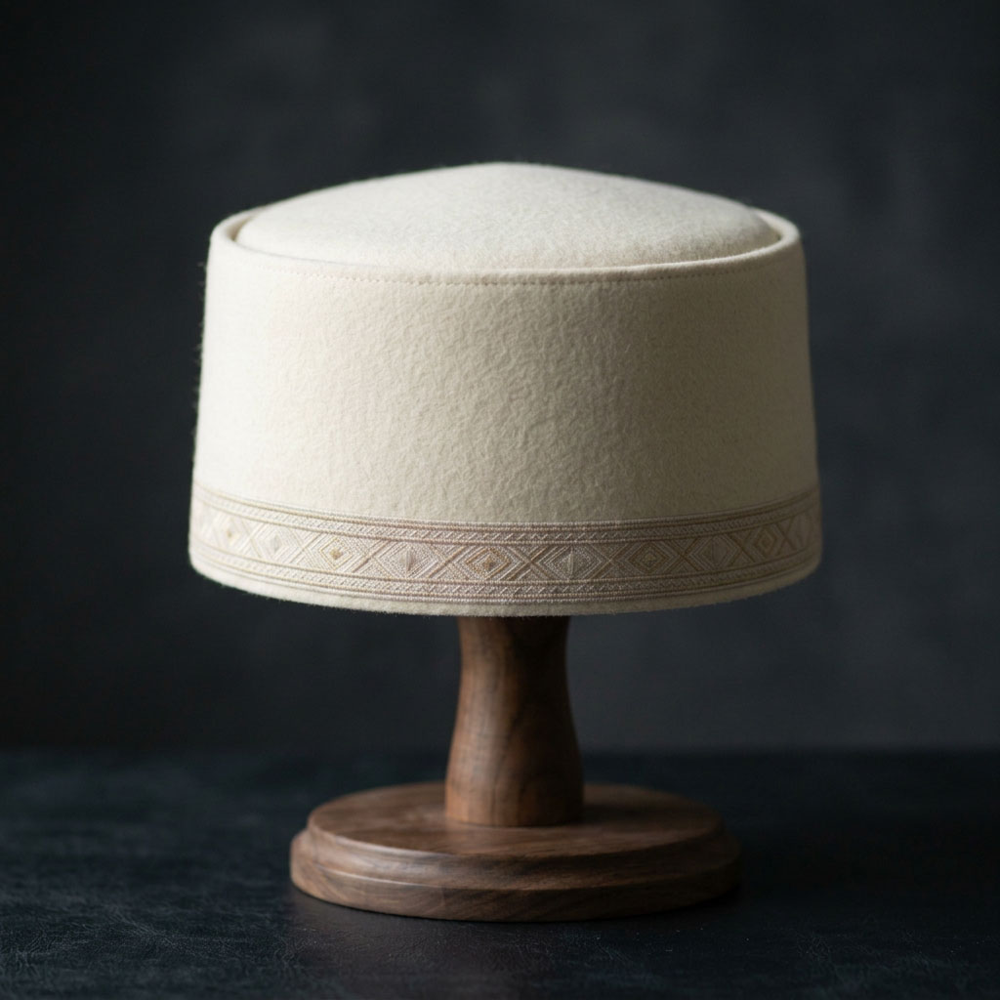
قبعة الحرفة
Qubbaat al-Hirfa — the craft cap
Note: a form specific to Dar al-Hiraf, with no established traditional name — descriptive, not an attested historical term.
A rigid cylindrical felt cap, with clean vertical side walls, a flat or slightly domed top, no tassel, with a thin embroidered border in a geometric pattern along the base — halfway between the taqiyah and the tarbouche, but more sober. Its colour indicates the wearer's craft.

The palette now follows exactly the five crafts of the hand and the craft of scent taught at Dar al-Hiraf — one colour per discipline, with no superfluous entry.
ARTS OF CONSTRUCTION
- Khaṭṭ (خط, calligraphy): light indigo
- Zellīj (زليج, zellige): muted cobalt blue
- Gebs (جبس, plaster & muqarnas): pale sand
ARTS OF MATERIAL
- Nassāja (نساجة, weaving & brocade): indigo
- Mashrabiya (مشربية, wood & carving): olive green
- ʿIṭr (عطر, perfumes & essences): golden amber

حزام الإتقان
Hizam al-Itqan — the grade belt
A continuous progression of browns, from raw to very dark, marks the personal path without ever exposing it as a visible hierarchy:
- raw, undyed: entry, novice
- light brown: advanced training
- dark brown, almost black: nearing mastery
- dark brown, embroidered in gold thread: master
إِنَّ اللَّهَ يُحِبُّ إِذَا عَمِلَ أَحَدُكُمْ عَمَلًا أَنْ يُتْقِنَهُ
inna Allāh yuḥibbu idhā ʿamila aḥadukum ʿamalan an yutqinahu
“Allah loves that when one of you does a job, he does it with excellence.” The grade-4 belt bears this ḥadīth, in Andalusian Kufic embroidery.
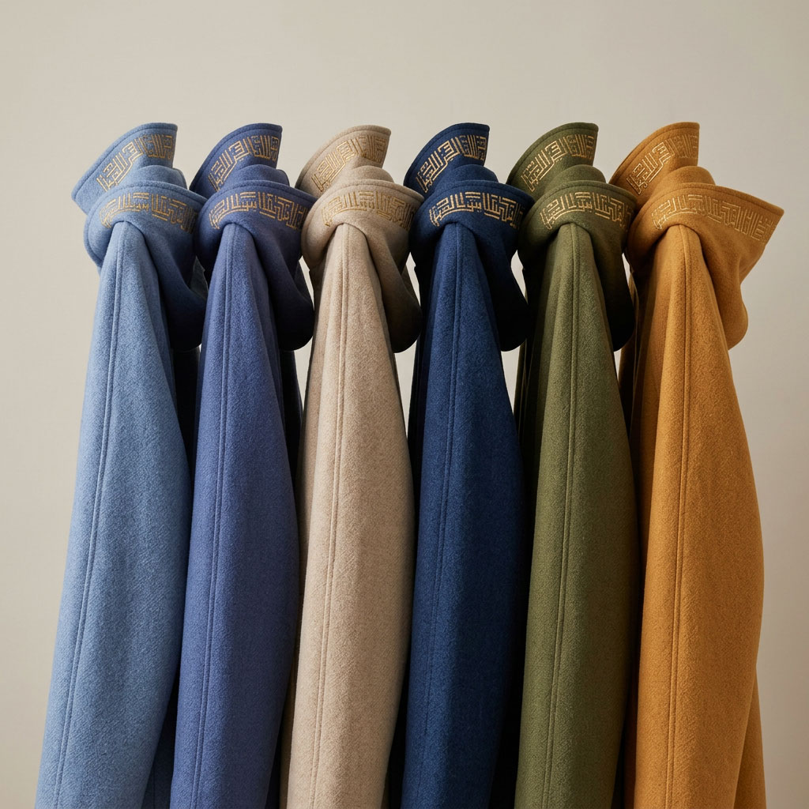
الفروة
Al-Farwa — the winter mantle
When the nights turn cool, a wool mantle is added to everyone's outfit: the Al-Farwa, a full cape with a structured hood, draped over the shoulders and open at the front, on the model of the traditional burnous — without cut sleeves, the arms remaining free beneath the fabric.
Use — worn by everyone, from the youngest apprentice to the master, in the colour of his own guild; not to be confused with the investiture mantle (Al-Khirqa, see below), which remains black and gold, unique, given only once in a ceremony.
Material — felted wool, hood and collar edged with Andalusian Kufic embroidery in gold thread, the same decorative language as the grade-4 belt, but here with no link to grade.
BASE OUTFIT — THE APPRENTICE
The long gandora remains the reference for communal life and occasions of representation; the short form, worn over the visible serwal, is reserved for work in the workshops and everyday days. Both are worn, in winter, with the Al-Farwa.

Long form, ecru gandora, cap and babouches in the colour of the craft, grade-1 belt in raw undyed leather.

Long form, completed with the Al-Farwa in the colour of the craft.
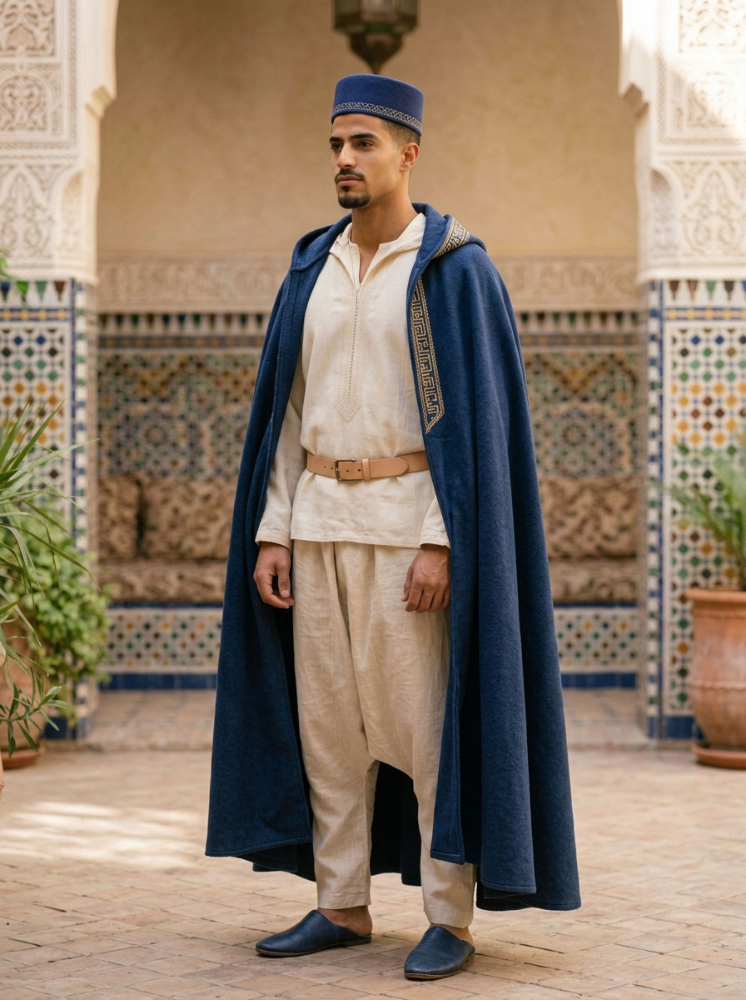
Short form, over the visible serwal, completed with the Al-Farwa in the colour of the craft.
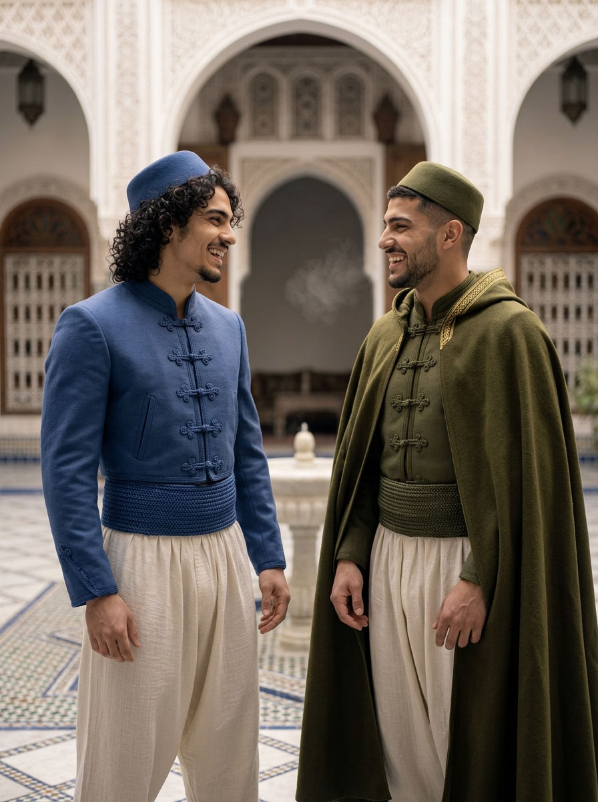
On the left, the base outfit, in one guild's colour; on the right, the same outfit, in another guild's colour, completed with the Al-Farwa.
الجَبادور
Al-Jabador — the naib's garment
Between the trainee and the master, an intermediate level: one of the most advanced students of each guild holds the role of nāʾib (النائب, "deputy") — assisting the other trainees when the maalem is occupied or absent, without ever substituting for his authority on matters of training or discipline.
His outfit signals this without ostentation: a jabador — a jacket closed with hand-braided ʿaqad buttons (عقد), in the tone of the craft — worn over a serwal in ecru linen, an mdama belt braided in the same tone as the jacket, the usual craft cap of the trainees, and babouches (belgha, بلغة) dyed in the colour of the craft, like the rest of the guild. Nothing in this outfit borrows from the register of the masters: the nāʾib remains a trainee among trainees, distinguished by a responsibility, not by a rank.
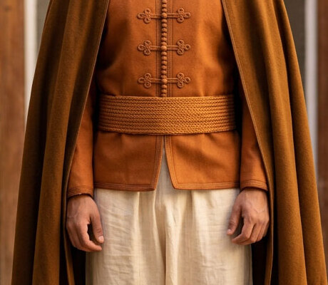
A BELT, NOT A RANK
The mdama belt
Where the trainee wears the Hizam al-Itqan in leather — the grade belt described above — the nāʾib and the muqaddam replace it with an mdama belt, in braided cord rather than leather, dyed in the same tone as the jacket rather than in a progression of browns: a sign of function, not of grade. The maalem, once he has put on the overgarment, shows no belt at all: the grade-4 Hizam al-Itqan disappears beneath the Al-Hulla, its role as a visible sign taken over by the garment itself.
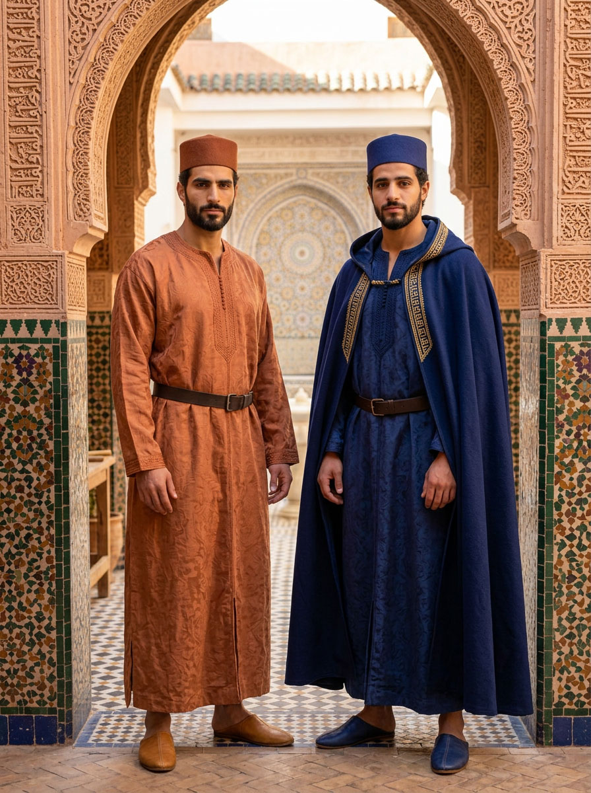
الحُلّة
Al-Hulla — the maalem's overgarment
The maalem (المعلم, al-muʿallim — the master craftsman) no longer wears the colour of his craft in a single detail, but in the whole garment: a long overgarment down to the ankle, in the tone of his craft, in tone-on-tone woven damask — without metallic thread, reserved for the investiture mantle alone. It is the passage from a collective visual identity to a fully personal one.

الشيخ
Ash-Shaykh — the head of the house
At the head of the house, the Ash-Shaykh (الشيخ) wears the colour of no craft: he does not belong to one guild, he represents them all. His overgarment, long down to the ankle, is black — the only colour in the system entirely outside the palette of the guilds.
His belt permanently bears the Andalusian Kufic embroidery in gold thread, without passing through the progression of the four grades: his authority does not need to be signalled by a scale, it is already whole. He alone may wear black and gold outside investiture ceremonies — an assumed distinguishing mark, not a matter of discretion.

المقدّمون
Al-Muqaddam — the two counsellors
Two muqaddam (المقدّمون) assist the Ash-Shaykh in residence — one for the inner life of the house, the other for outside relations. Their outfit follows the same logic as that of the nāʾib — jabador with ʿaqad buttons, serwal, mdama belt, cap — but in black rather than in the colour of a craft: they too belong to no guild in particular.
Residents alongside the Ash-Shaykh, in a space specific to the leadership — see The residency.
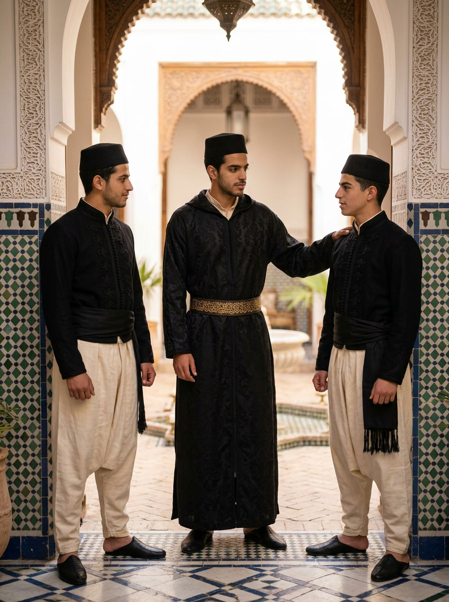
الشيخ والمقدّمون
Ash-Shaykh and the two muqaddam — together
The only difference from the outfits already described: in winter, the Ash-Shaykh and the two muqaddam wear the same black Al-Farwa — the only use of this colour for this garment, which the rest of the house wears in the colour of its guild.
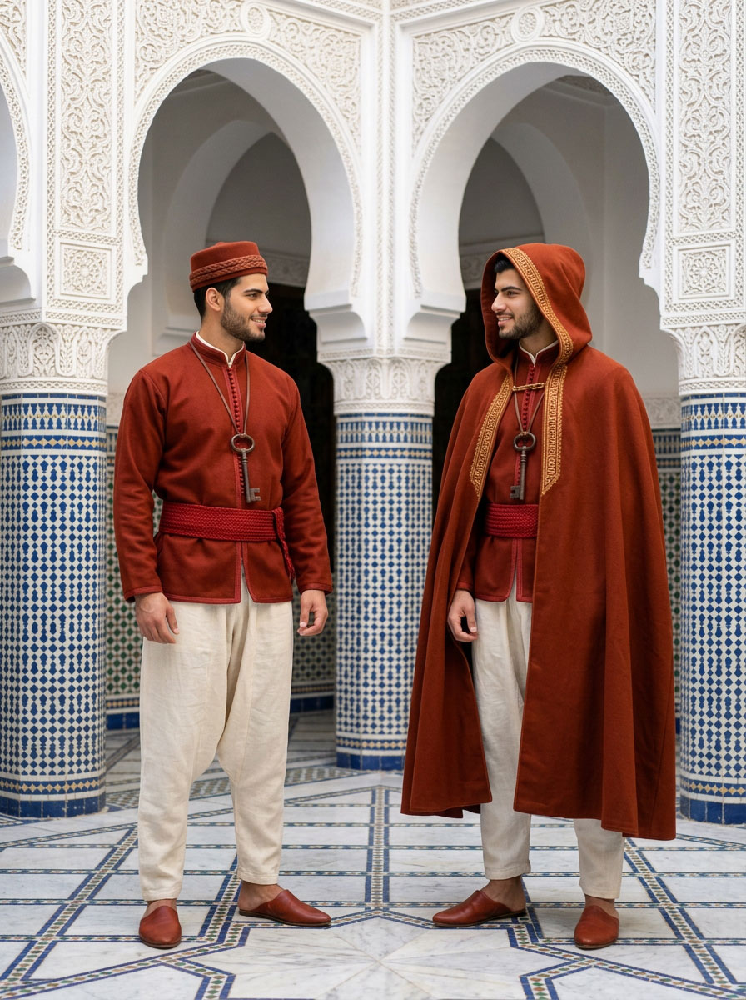
البوّاب
Al-Bawwab — the one who holds the door
The bawwāb (البوّاب) belongs to no guild either: his charge is not a craft of the hand but the threshold of the house. His dress therefore follows the logic of the nāʾib and the muqaddam — jabador with ʿaqad button loops, serwal, mdama belt, cap — in a colour that is neither that of a craft nor the black of the direction.
That colour is the red ochre of the ramparts — the earth from which Marrakech built its walls. The choice is not decorative: the man who holds the limit of the house wears the colour of the limit of the city. It is the only shade in the system borrowed neither from a craft nor from a rank, but from a place.
The jabador is trimmed with a red and yellow braid, and the cap — in the same shade as the rest — repeats that braid exactly at its base, in place of the common geometric edging. The babouches are likewise red ochre, following the rule by which each man wears them in his own colour. The serwal stays the undyed linen the whole house wears: the colour does not run down to the legs. On ordinary days he may keep to the plain qamis with the cap and the babouches: the sign then rests on the shade and the key, without the rest.
In winter he wears the hooded Al-Farwa in that same tone, hood and collar edged with the Andalusian Kufic embroidery as for everyone. The driba is cold at night, and his charge is held there: it is the garment of his post as much as of the season.
At his belt or on his shoulder, on a leather cord, he carries the iron key of the gate, in plain sight. It is not a grade and it is not embroidered: it is an object, taken up when the charge is taken up and set down when it is left. The service he renders is described in Threshold & rooms.
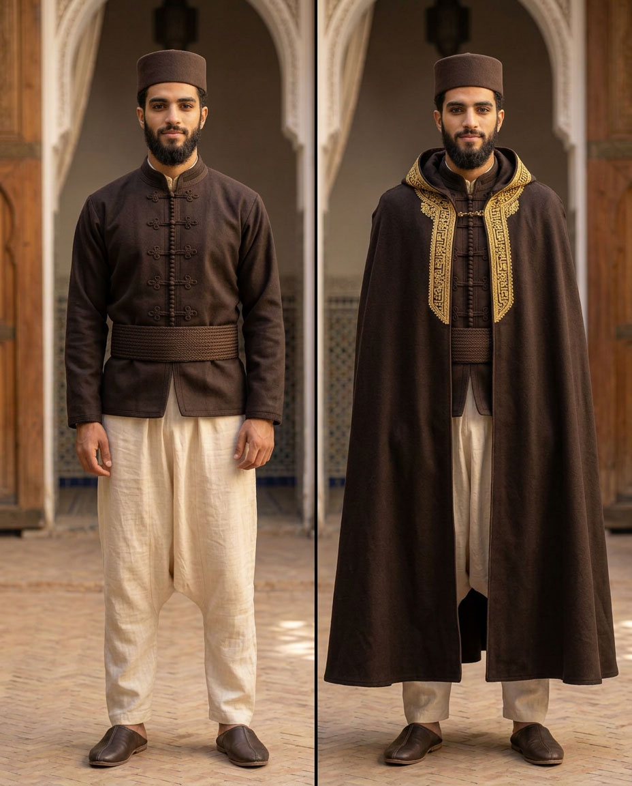
الخازن
Al-Khazin — the one who holds the volumes
Al-Khazin belongs to no guild: his charge is not a craft of the hand but the deposit of the books. His dress follows the same cut as that of the Bawwab — jabador with ʿaqad buttons, serwal, mdama belt, cap — in a colour that is neither that of a craft, nor the black of the direction, nor the ochre of the ramparts.
That colour is ink-brown — the iron-gall ink of Maghrebi manuscripts. The one who carries the volume wears the colour of writing. The serwal stays the undyed linen the whole house wears: the colour does not run down to the legs. Babouches and cap follow the ink-brown.
In winter he wears the hooded Al-Farwa in that same tone, hood and collar edged with the Andalusian Kufic embroidery as for everyone. The charge does not pause with the cold: the book is carried on the short days as well.
At his belt, on a cord, he may carry the key of the khizana: an object of charge, like the key of the gate for the Bawwab — taken up when the office is taken up, set down when it is left. See Al-Khizana.
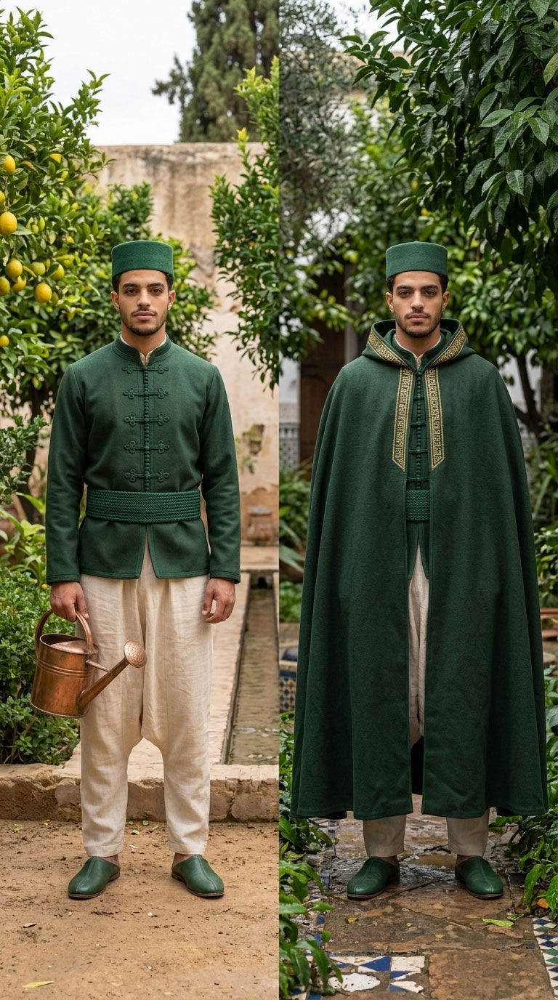
الجنّان
Al-Jannan — the one who holds the gardens
Al-Jannan belongs to no guild: his charge is not a craft of the atelier but the living of the house — garden, green spaces, orchard and kitchen garden. The same cut as the Bawwab and Al-Khazin — jabador with ʿaqad buttons, serwal, mdama belt, cap — in a colour that is neither the olive of the wood, nor a craft, nor a rank.
That colour is the deep green of the gardens — darker than the olive of the Mashrabiya, without gold and without black. The one who holds the earth wears the colour of what he keeps. The serwal stays undyed. Babouches and cap follow the green of the charge.
In winter he wears the hooded Al-Farwa in that same tone, hood and collar edged with the Andalusian Kufic embroidery as for everyone. The garden does not wait for fair weather: the tree, the water and the kitchen garden are held under the rain as well.
الوكيل
Al-Wakil — the one who holds the household economy
The wakīl (الوكيل) belongs to no guild: his charge is not a craft of the hand but the economy of the house — provisions, store, table, accounts. His dress follows the same cut as that of the Bawwab — jabador with ʿaqad buttons, serwal, mdama belt, cap — in a colour that is neither that of a craft, nor the black of the direction, nor the ochre of the ramparts.
That colour is oil-brown — the linseed oil that feeds the leather, the walnut oil that holds the lamp. The one who holds the stores wears the colour of what is kept. The serwal stays the undyed linen the whole house wears: the colour does not run down to the legs. Babouches and cap follow the oil-brown.
In winter he wears the hooded Al-Farwa in that same tone, hood and collar edged with the Andalusian Kufic embroidery as for everyone. The charge does not pause with the cold: the store is held on the short days as well.
At his belt, on a cord, he may carry the key of the store: an object of charge, taken up when the office is taken up, set down when it is left. See At-Tadbir.
الفرّاش
Al-Farash — the one who holds the rooms
The farrāsh (الفرّاش) belongs to no guild: his charge is not a craft of the atelier but the rooms, the linens, the beds — what is prepared before the guest enters, and what is taken up after. The same cut as the Bawwab — jabador with ʿaqad buttons, serwal, mdama belt, cap — in a colour that is that of no craft.
That colour is the ecru of the linen — the undyed cloth of the sheets he keeps. He is not set apart by a brightness: he is set apart by the object. The serwal stays undyed. Babouches and cap follow the ecru of the charge, more matte than white.
In winter he wears the hooded Al-Farwa in that same tone, hood and collar edged with the Andalusian Kufic embroidery as for everyone. The rooms are held on the short days as well.
At his belt, on a cord, he carries the keys of the rooms: an object of charge, taken up when the office is taken up, set down when it is left. See Threshold & rooms.
قيّم الحمّام
Al-Qayyim al-hammam — the one who holds the hammam
The qayyim al-ḥammām (قيّم الحمّام) belongs to no guild: his charge is not a craft of the atelier but the hot water, the heat, the linen of the bath. The same cut as the Bawwab — jabador with ʿaqad buttons, serwal, mdama belt, cap — in a colour that is that of no craft.
That colour is light ash — the ash of the hearth that holds the hammam, neither the black of the direction nor the white of the linen. The one who holds the bath wears the colour of what remains after the fire. The serwal stays undyed. Babouches and cap follow the ash.
In winter he wears the hooded Al-Farwa in that same tone, hood and collar edged with the Andalusian Kufic embroidery as for everyone. The hammam does not pause with the cold: that is when it is most held.
At his belt, on a cord, he carries the key of the hammam: an object of charge, taken up when the office is taken up, set down when it is left. See The hammam.
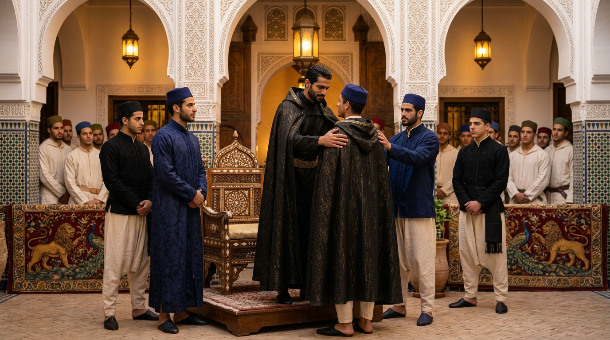
الخرقة
Al-Khirqa — the investiture mantle
For great occasions — entry into the path, advancement in grade, investiture of a master — a distinct mantle is bestowed, not simply worn: an investiture ceremony, directly modelled on the dervish tradition of the khirqa. The master personally clothes the student, sealing the entry or advancement into the community.
A single colour — deep black — in gold-thread sqalli brocade, the only use of this fabric in the whole system alongside the Ash-Shaykh's belt and the edge of the grade-4 belt. This black heightened with gold is not chosen at random: it echoes, from a distance, the kiswa that covers the Kaaba — a visual vocabulary of gravity and honour widely recognised across the Islamic world, without claiming any equivalence with it. This is the one moment where the garment openly seeks hiba (هيبة), the bearing that commands respect — everywhere else in the house, sobriety comes first.
The mantle is sewn only once for each resident, at his first investiture. It then remains the common garment for every later ceremony — the same, identically, for all who are invested, without distinction of grade or guild. This mantle and this ceremony take on their full meaning in light of the ideal that underlies them — see Futuwwa.
الهدية
The gift garment for distinguished guests
For visits by dignitaries or patrons, no outfit is offered to the guest to be worn on the spot — the dress of a court dignitary is a matter of his own protocol. An overgarment or a light mantle is instead offered as an end-of-visit gift, on the model of the historical practice of craft guilds and Maghrebi courts.


الفروسية والرماية والمصارعة
Clothing for physical activities
Consistent with the historical ideal of futuwwa, the system provides a dedicated outfit for each discipline — a garment for movement, never a costume. These disciplines and their place in the ideal of futuwwa are developed in Furusiyya; the zurkhane and its own outfit, the tonban, are covered in Javanmardi.
السروال
The sarouel — standing and ground wrestling
For standing wrestling (Musara), a short sarouel in light linen, leaving the legs entirely free. For ground wrestling, a fitted trouser in worked leather, inspired by the kispet of traditional Ottoman wrestling — a grip becomes possible without ever tearing the fabric.

Standing Musara, in light linen sarouel.
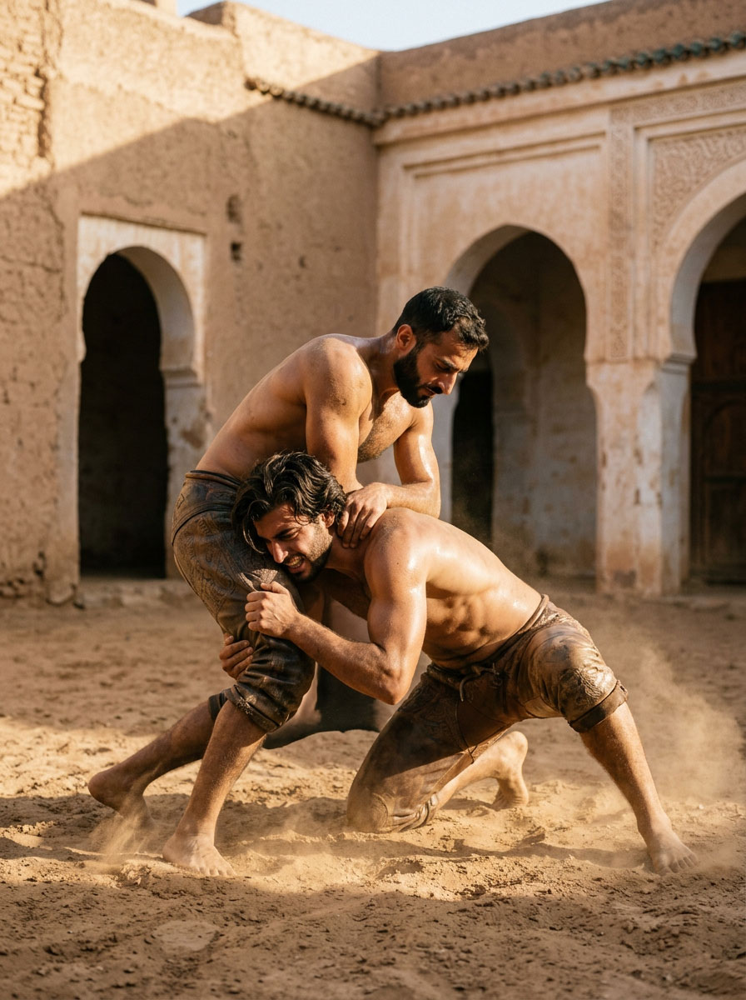
Ground Musara

Kispet
الغندورة
The gandora — archery
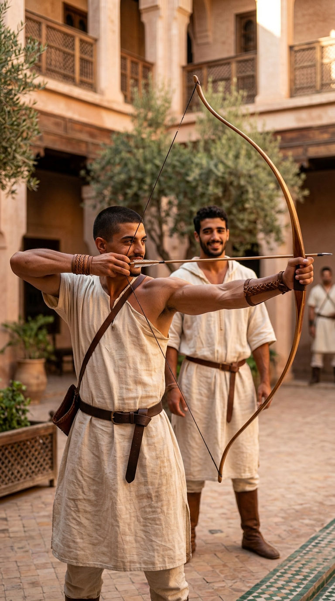
Rimaya — the shoulder freed for the bowstring
For Rimaya, the base gandora is enough, with one detail: the right shoulder and forearm bared, so that the bowstring meets no obstacle at the moment of release.
الغندورة
The gandora — horsemanship

Horsemanship — Outfit of representation

Horsemanship — Desert outfit
For Furusiyya, a gandora with a deep side slit, for freedom of leg in the saddle, and a tightened turban rather than the usual cap. Two outfits coexist: one for representation, the other, more stripped-down, for the desert.
تحت الثياب
Underlayers — the private pieces
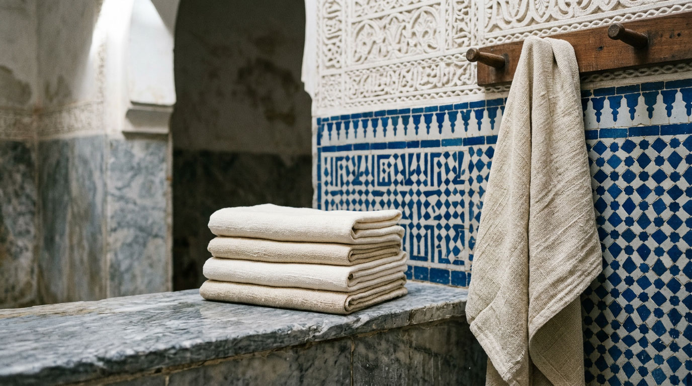
الفوطة
Al-Futa — the hammam cloth
Training ends at the hammam, not in the changing room. A single panel of light linen, tied at the waist, on the model of the kötény of Ottoman baths — the fūṭa (فوطة), the traditional hammam cloth.
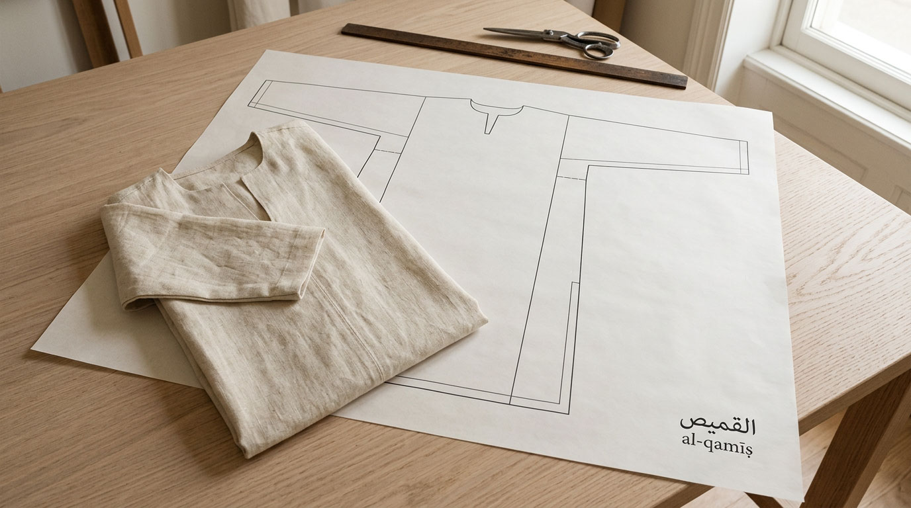
القميص
The qamis
Qamis in ecru linen, without embroidery or identifying colour: the first layer, worn beneath the gandora — a private piece, outside the system of public signs.
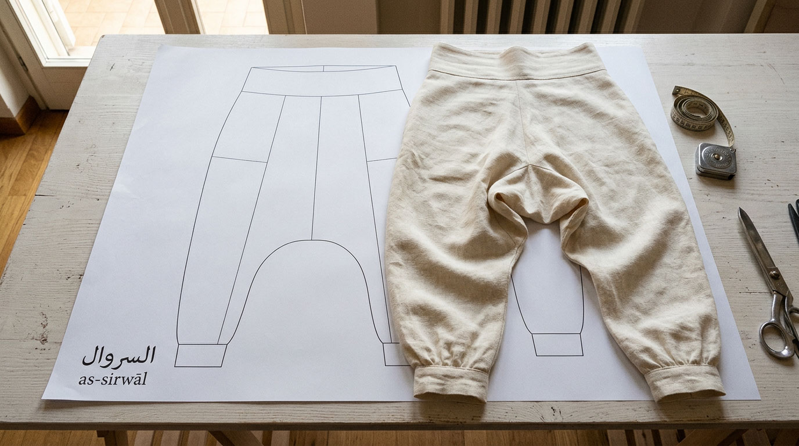
السروال
The serwal
Wide trousers in ecru linen, traditional low cut: the layer worn beneath every outfit, gandora as well as discipline attire.
ثوب الصلاة
Prayer attire
The Quran prescribes, in simple terms, the vestimentary dignity of prayer: "O children of Adam, adorn yourselves in your finest attire at every prostration" (surah al-Aʿrāf, 7:31) — the zīna (زينة), the adornment, understood here as cleanliness and decency, not as ornamentation. The Prophet ﷺ added a concrete precision: that no one should pray in a single garment with nothing covering the shoulders (reported by al-Bukhari and Muslim).
Dar al-Hiraf's white or pale ecru qamis meets these two requirements: covering the ʿawra in its entirety, from shoulders to ankles, in clean fabric, without embroidery or belt. In prayer, equality among the students prevails over any sign of grade or craft.
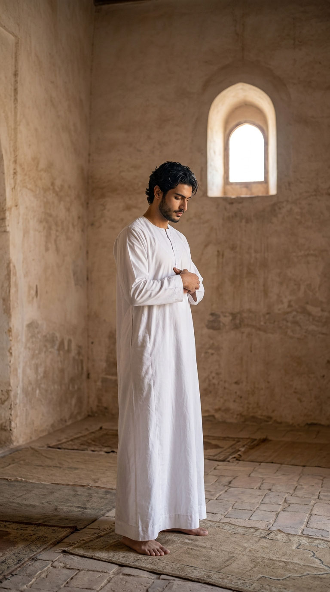
The terms on this page are gathered in the glossary of the house.